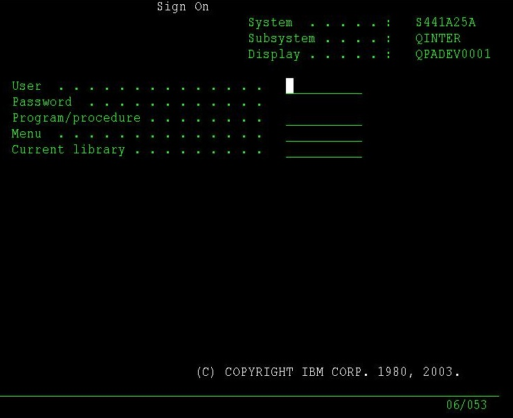
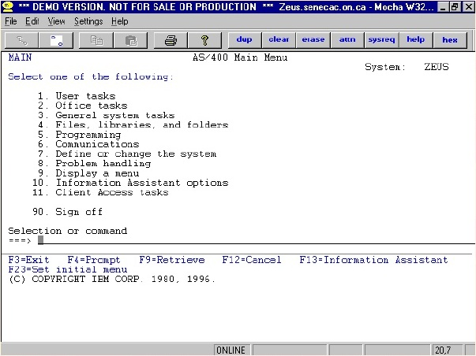
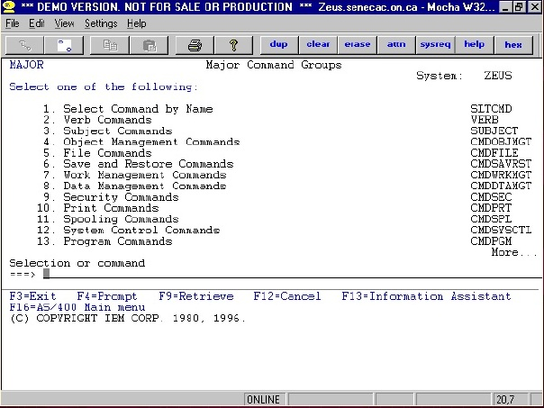
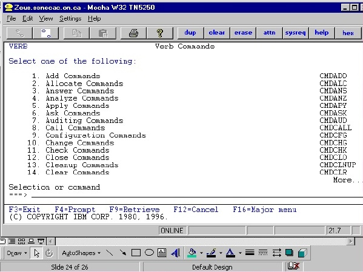
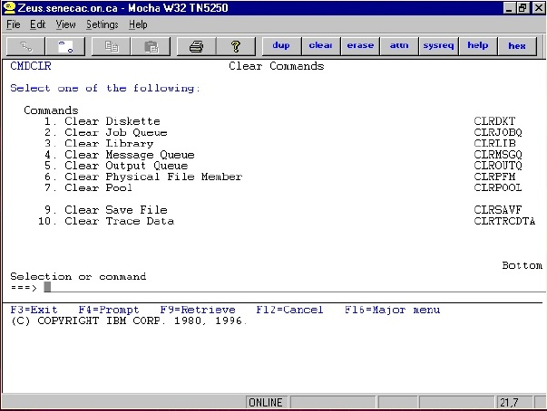
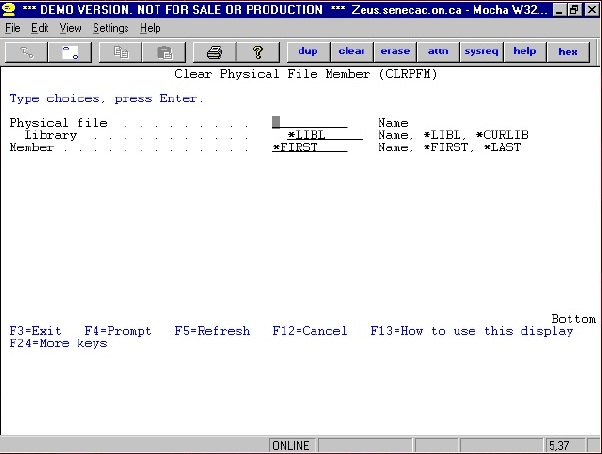
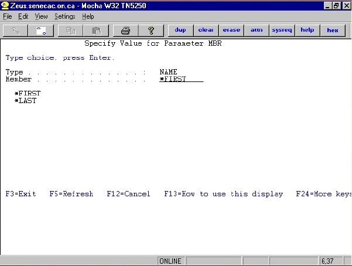
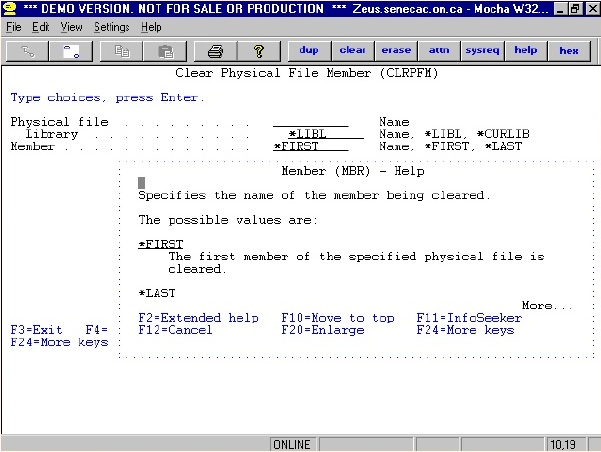
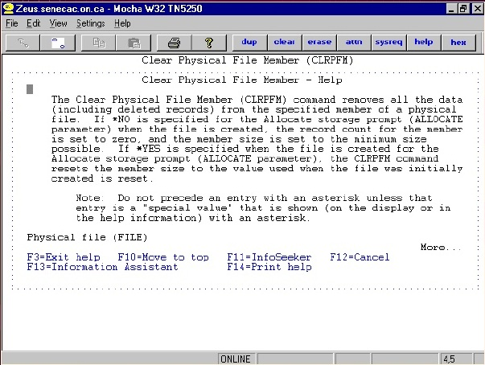
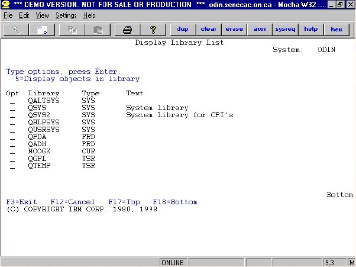

The Signon Screen
The Signon Screen
The Signon Screen
The Signon Screen
•Introduction to AS/400•Definitions•Signing On•Help is available!•Lab stuff
•Introduction to AS/400•Definitions•Signing On•Help is available!•Lab stuff
Introduction to AS/400•Definitions•Signing On•Help is available!•Lab stuff
Is
most often used by a company to runtheir daily business
transactions•Can
be used for special applications withina large organization
Κατάλογος περιεχομένων
AS/400 Mid-range Operating System 1
LECTURE AGENDA 2
What is an AS/400? 2
DEFINITIONS 2
“System” 2
OS400 2
Licensed Programs 3
System Values 3
“User” 3
“Subsystem” 3
“Job” 3
“Interactive Jobs” 3
“Batch Jobs” 3
“Subsystem” 4
Queues 4
Signing On 4
The Signon Screen 4
Main menu 5
Major menu 6
Verb menu 9
Clear commands Menu 10
Clear Physical File Command 10
'?' in Member Parameter 11
Definition of the Member Parameter (Field Level Help) 11
Definition of the CLRPFM Command (Extended Help) 12
The AS/400 is “Green Screen” 12
IBM AS/400 Help 12
A. Files 12
File Member 12
B. Database Files 13
Types of *FILES 13
Source Physical File vs Data Physical File 13
Steps to create a Physical Data File? 13
Loading data into a physical file (created) ? 13
Program described file : How to create & to put data into it 13
Externally described file : How to create & to put data into it 13
AS/400 Architecture 14
Objects 14
Object? 14
Object Types 14
How the AS/400 finds Objects 14
AS/400 commands ask for library and object names 14
Library Lists 14
LIBL vs Qualified Object Name 14
A few special objects 15
What is a Spooled File? 15
Spooled Files 15
How Do Spooled Files get Created? 15
"Work with Jobs" Command 15
WRKUSRJOB (command) 15
WRKSPLF vs WRKOUTQ 16
Lab 1 Objectives 16
“Objects” 16
“Libraries” 16
Library Lists 16
Library List Commands 17
COMMANDS 18
Commands - CL Syntax 18
Commands that do not Require the Entry of Parameters 18
Keyword vs Positional Notation 18
Questions 19
Naming of Commands 19
Some typical nouns 19
How do I find the exact syntax (including keywords) of a command? 19
AS400 Menus 20
Move a file from the AS/400 to the PC using FTP 20
Using Whildcards 20
Reference 20
•Introduction to AS/400
•Definitions
•Signing On
•Help is available!
•Lab stuff
•IBM’s “Application System”/400
•Multi-user, multi-tasking
•Is most often used by a company to runtheir daily business transactions
•Can be used for
special applications withina large organization
•The AS/400 is the “system”
– “The system is down”
– “The system is slow today”
• AS/400 Operating System
• Object-Based
• Not only does it control all the activity on the AS/400, but it also incorporates many features that would be separate software components on other systems.
•Programming Languages
– Pascal, PL/1, Basic, RPG, C, C++, Cobol, Java,SQL, etc.
•Control and Configuration attributes that allow you to customize the operating environment to suit the company.
•These values define what the default valueswill be.
•You can’t change them, but you can look atthem.
•A person who “uses” the AS/400
•A User will have unique Userid
•A Userid identifies you to the system when you signon
•Each Userid has a User Profile which describes the user and their authorities
• Jobs run in subsystems.
•An operating environment in which system resources (eg. main storage) are divided up and allocated.
•Enable better performance tuning.
•Described in subsystem descriptions.
•Most are started at IPL time.
•A “job” is any and every piece of work on the AS/400.
•There are two types of jobs:
– Interactive jobs
– Batch jobs
•A job that begins when a user signs on to the system and ends when they sign off.
•It is a job with interaction between the user and the AS/400, similar to a conversation (a polite conversation!).
•Input for the job is entered via the screen.
•A job that runs in the background.
•They do not require input from the screen, but would read data from files.
•They are generally jobs that use a lot of resources and are lower priority than interactive jobs.
•Usually submitted by interactive jobs e.g.a program compile
• Jobs run in subsystems.
•An operating environment in which system resources (eg. main storage) are divided up and allocated.
•Enable better performance tuning.
•Described in subsystem descriptions.
•Most are started at IPL time.
Two subsystems
• Interactive jobs run in subsystem QINTER
• Batch jobs run in subsystem QBATCH
•A queue is a line-up! A place where things wait.
•Examples of AS/400 queues:
– job queues: where batch jobs wait
– message queues: where messages wait
– output queues: where spool files wait to print
The AS/400 is easy to use:
•Menu driven
•Lots of built-in help
•Built-in security
•The first level of security, it keeps out unauthorized people
•It requires a valid userid and password (see your sticky label)
•Always remember to signoff if you aregoing to leave your computer. If you don’t,someone could come along and clobber your work!









•Green screen v.s. GUI (Graphical User Interface)
•You can’t point and click!
•You must use the TAB keys to go from field to field
• F1 = HELP
• Field Level
• Extended Help
• Info Seeker
Files = objects that store data
ie. customer file: customer #, address, billing info etc. for each customer
source file - special file that stores a programmer’s’source code
eg. Judy stores all her source code in source file Judysrc (in library Judylib)
Source files have many ‘members’ one member for each source program
eg. Judysrc file has 3 members: RPGPGM1,RPGPGM2, CLPROG, each contains a different program
PDM (Prog Dev Mgr) give easy access to a programmer’s stuff (libs/files/mbrs)
Physical File PF
Source
Data
Logical File LF
Printer File PRTF
Display File DSPF
Source Physical File
Layout is fixed: 3 fields
- programmers can only alter the length of the textfield
Used to store code
Data Physical File
Layout is determined by Application Design
Used to store data
Create a Source Physical File called QDDSSRC
Create a source member in QDDSSRC withthe name of the Data Physical File
Type in the DDS Code
Save the Code
Compile the Code
DFU
SQL
Copy File
Write a program
Use the CRTPF command to create the file with a specific record length
Use a ‘Copy’ command to copy data into the file, or SQL, or write a program, or DFU.
Create the source physical file member
Type in the DDS code
Use the CRTPF command to create the file with the record layout specified in the DDS Code
Use a ‘Copy’ command to copy data into the file, or SQL, or write a program, or DFU.
Software Applications do not have to be changed or recompiled with the operating system changes.
Model Names denote the age and speed of the processor.
Old style: B, C, D, E, F
New style:720, 740, etc.
Software vendors base licensing fees on Model
takes up space on the AS400
Has a Description
Has an Object Type
... are ‘stored in’ (addressed by) libraries
Certain types of commands only work with certain types of Object Types
eg. DSPUSRPRF
Object Type is assigned to the Object at time of creation
eg. CRTLIB creates objects with a type of *LIB
When an object is created, it is created ‘in’ a particular library.
To access an object, the AS/400 needs to know what library the object is in.
The library is really a directory which contains pointers to the objects in that library.
(CL) Commands prompt you for the object name and library name
.eg. CALL and press F4: prompts you for program tocall (the object we are accessing in this case) and the library in which that program object resides.
We could have a program object named PROGA in two different libraries!
What if we are always accessing objects in the same libraries over and over again?
We have to tell the system again and again in which library to find the object? PAIN!
Hence, the library list. When I go to use an object, assume it is in a library in my library list, a list of commonly used libraries.
the default for the library parameter incommands is *LIBL - Search my Library List for the object
Library List is a convenience only, you can always access a library not on the list! (as long as your user profile has proper authority to thelibrary)
Qualified Object Name:
Library/Object ie. CMOPS324/REVIEWS
Stored in library QSYS:
Library Descriptions,
Device Descriptions and
User Profiles
This means that you do not have to specify a library name when you access these objects.
- When you print something, a spool file is created withthe data to be printed
- WRKSPLF shows your spooled files
- Are stored in Output Queues
- To print a Spooled File, the file must be moved to anOutput Queue attached to a printer.
QINTER
1. Job
Program/Command (Data *FILE, Report Layout *FILE) = Spooled file
2. Output Queue
Spooled File
To display information about your current Interactive job, simply type: WRKJOB
To display information about any other job, use the Work With Job (WRKUSRJOB) and enter the Job Name and User. Number is Optional.
To display your Batch Jobs, use the Work with Submitted Jobs Commands (WRKSBMJOB)
Shows you a list of all of the jobs that you own on thesystem irregardless of the subsystem
Status:
Active = Job is currently running
Outq = Job is finished
Jobq = Job is waiting to process.
Do delete a ‘run-away’ job, take option 4
- WRKSPLF groups all of YOUR spooled files together onone screen irregardless of the Output Queue
- WRKOUTQ groups together all of the spooled file in ONE output queue irregardless of the USER
WRKSPLF option 2. Change the Spooled File to OutQ (PRT01)
WRKSPLF-2(DC234X99(SPLF#1, SPLF#2))=PRT01(SPLF#3, SPLF#4)
•Get you familiar with AS/400 greenscreens, using menus etc.
•Review some of the definitions covered inlecture (user profile, jobs, subsystem, screentypes, accessing help)
•Set up your stuff for later labs (a file for youto store your programs)
•any thing on the AS/400 that has a nameand takes up space in storage
•on Unix/Windows, everything is a file
•on AS/400, everything is an object
•on Windows, files have extensions (.txt)
•on AS/400 objects have types
•Common object types include:
– libraries, files, job queues, programs
• Library: an object whose purpose is to‘store’ and index other objects. ie. objectsare ‘stored’ in libraries.
•Exactly like a directory in Unix/Windowshowever you do not have libraries withinlibraries on the AS/400.
•Example: user Deb stores all her objects in library DEBLIB
Each job has an attached Library List
Different Types of Libraries:
- System: IBM Supplied
- Product:Added automatically when an IBM product is used
- Current: Defined by an individual user ID
User ID’s default Library
- User: Non-IBM Supplied Libraries
Created by Business to organize programs, files,etc.
Determine where a Job finds Objects
Parts of a Library List (or the 4 library list types)
- System (SYS)
- Product (PRD)
- Current (CUR)
- User (USR)
ADDLIBLE -
Adds an entry to a library list to the USER portion of the library list
RMVLIBLE -
Removes an entry from the USER portion of thelibrary list
EDTLIBL -
Adds/Deletes/Changes entries on the USER portionof the library list
CHGCURLIB -
Changes the Current Library
CHGLIBL -
Changes the Current Library and allows
Add/Change/Delete to the USER portion of thelibrary list.

*** All Library List commands are listed on the CMDLIBL menu.
*** Don’t rename or delete your current Library!
> Comand-name ((space) parameter)
WRKJOB
WRKACTJOB
WRKSBMJOB
Keyword
WRKOUTQ OUTQ(PRT01)
CRTLIB LIB(MOOGK10) +
TEXT(‘Cindys Library’)
Positional
WRKOUTQ
PRT01CRTLIB MOOGK10 *PROD ‘Cindys Library’
How do I know what the *&(&!! Commands are?
How do I know what the !@#!@ Keywords are?
Based on English!
Combination of Verb and Noun
e.g. CRTLIB = Create + Library
Typically start with the following verbs:
|
CL Verb |
English |
Description |
|
CALL |
Call |
Executes a program |
|
GO |
Go to |
Executes a Menu |
|
CPY |
Copy |
Copies a file |
|
CRT |
Create |
Creates an object |
|
DSP |
Display |
Displays something about an object |
|
WRK |
Works With |
Works with an object |
|
CL Noun |
English |
Description |
|
LIB |
Library |
Object that holds Objects |
|
LIBL |
Library List |
List of Libraries for a Job |
|
OUTQ |
Output Queue |
Object that stores Spool Files |
|
JOBQ |
Job Queue |
Object that stores Batch Jobs to be processed |
|
FD |
File Desc |
Description of file |
|
F |
File |
Object that stores data |
|
USRPRF |
User Profile |
Object that lists attributes about a Sign On Id |
Answer:
Use AS400 Menus
Use AS400 Prompts (F4)
by pressing F4 at a Command line
by typing command and pressing F4
How do I find the Keywords to a command?
Type the command and press F4
|
Menu |
Description |
|
MAIN |
Main Menu |
|
PROGRAM |
Programmers Menu |
|
MAJOR |
Sorts Commands |
|
CMDCPY |
Copy Commands |
|
CMDDSP |
Display Commands |
|
CMDWRK |
Work With Commands |
|
CMDLIB |
Library Commands |
|
CMDMSG |
Message Commands |
|
CMDOUTQ |
Output Queue Commands |
|
CMDUSRPRF |
User Profile Commands |
Open a DOS Window by clicking o the MS-DOS Prompt on your desk top.
Type FTP ODIN.SENECAC.ON.CA
Login by typing your User id (DC234 ???) - Press ENTER
Enter your Password - Press ENTER
Type GET LIBRARY/FILENAME.MEMBER C:\NEWFILE -Press ENTER.
For example, to move REVIEW file, member REVIEW1 in CMOPS324 library to a file called REVIEW1 in your C: drive, do this: GET CMOPS324/REVIEWS.REVIEW1C:\REVIEW1
To exit type BYE - Press ENTER
What does the ‘*’ (Asterix) denote?
When used before an ‘AS/400’ word, indicatesthat the word is a special value.eg. CRTLIB LIB(MOOGK1)TYPE(*TEST) TEXT(‘Cindys Library)
When used at the end of a word, indicates ageneric combination of alphanumerics(wildcards). eg. WRKLIB SIMON*
Use of the ‘?’
Entering a command to see all possible values for aparameter.
F4 does the same
Based on http://www.scribd.com/doc/19245156/As-400-Admin-ppt